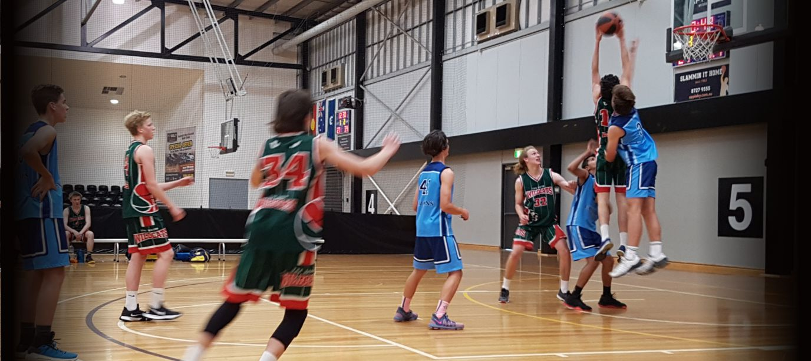
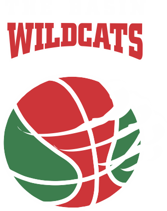
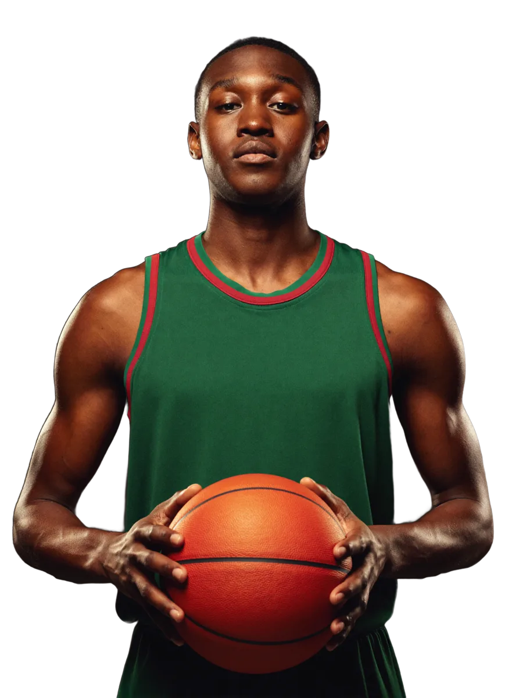
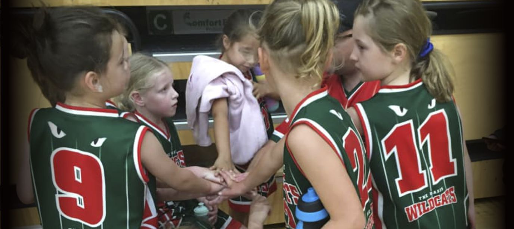
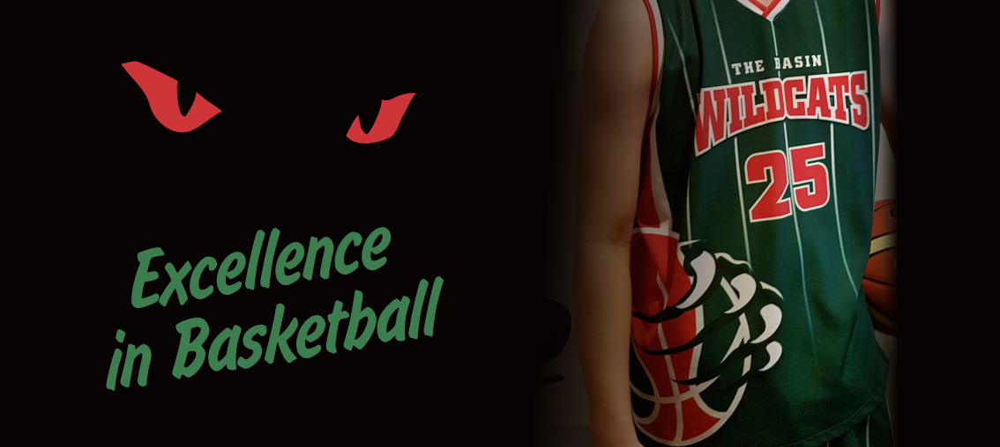
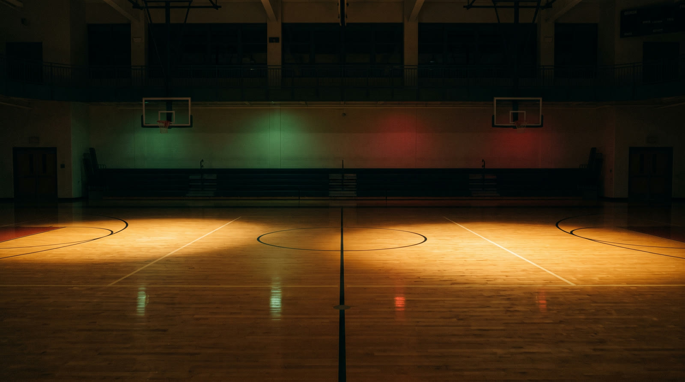

Game NightGreen and red in flightKnox competition, every weekend

WildcatsThe Basin Join UsExcellence in basketball since 1975
The Basin Wildcats are a family basketball club in the Knox competition, with more than 70 teams across all ages and standards. Fifty seasons in, the idea has not changed: every kid gets a game.

Winter and summer competitions across Knox. Home base: The Basin Primary School.
We field more than 70 teams across the Knox and Kilsyth competitions, winter and summer. The Wildcats are a fun, family orientated club and a fantastic introduction to basketball, and plenty of our players have gone on to representative and state teams. Most of all, this is where local kids learn to love the game.
Real Wildcats, real weekends: from under 8s huddles to game nights across the Knox district.

Game Night
Juniors
The Club
Wildcats basketball runs all year. Registrations open ahead of each season, and new players can enquire at any time.
Domestic competition through the cooler months, with teams across all ages and standards.
The summer competition keeps squads together and new friendships forming over the break.
Home base is The Basin Primary School, with games played at venues across the Knox district.
Every Wildcat started with a hello. Tell us who wants to play and we will take it from there.
Never played before? Perfect. Tell us your child's age and we will find the right team, the right coach and a fantastic introduction to basketball.
New player enquiryRegistrations open before each winter and summer season. Jump back in with your team and pick up where you left off.
Season informationA family club runs on families. Coaches, team managers and scorers are always welcome on the Wildcats bench.
Get in touchFill in the new player enquiry and we will come back to you with team options for the season ahead.